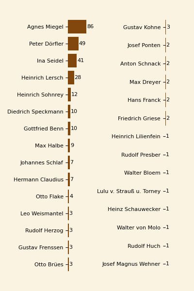
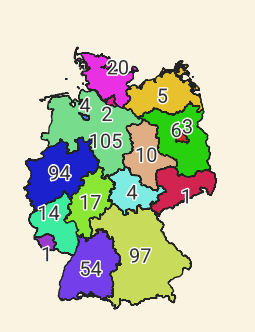
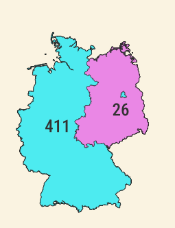
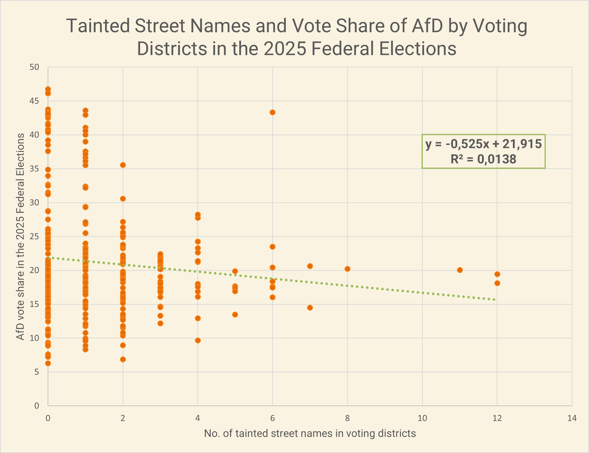

Introduction

.jpg){kind=link}
At least since the 2010s, Germany has seen an intensified discussion regarding legacy street names and the commemoration of historical figures in public spaces. This debate is driven not only by those with an interest in history but also by current developments that appear to challenge democratic norms and the country's commitment to human rights.
Following the 2011 exposure of the neo-Nazi terrorist organization NSU (National Socialist Underground) and the rise of right-wing populist movements since the mid-2010s, local politicians in many areas have reconsidered the names of streets and other features in the public sphere honoring old colonialists and racists—and particularly the supporters of Nazi rule. The renaming of the former Hindenburgufer in the city of Kiel was not an isolated case. Paul von Hindenburg (1847-1934), the World War I general and anti-democratic president of the Weimar Republic (1925–1934), who helped Hitler come to power, has vanished from many city maps where he long served as the namesake of central squares and streets. A comparable shift has affected once-popular authors who promoted the Nazi regime and wartime sacrifice, such as Agnes Miegel, Ina Seidel, and Gustav Frenssen—figures largely forgotten today.
Debates about honors and renaming often spark intense public controvesy and are sometimes conducted contentiously in the national public sphere. In principle, however, discussions about whether or not specific street namings and honors in public spaces are still acceptable are a matter of municipal politics. In a guideline from 2021, the German Association of Cities points to the complexity of decision-making processes — which must consider not only historical research, but also local sense of identity and municipal finances. Whether or not contested names remain, whether or not they are supplemented with explanatory plaques, or disappear entirely — these issues are frequently contested at the local level.
Case Studies

{kind=link}
The interactive web map presented here offers a new, broader perspective on the problem. It locates three frequently criticized groups of namesakes across the entire country, thereby making overarching patterns visible. The scale points to historical and structural reasons that led to the prevalence—or the absence—of Nazi-associated names, most notably the Cold War-era division of Germany. The map is not intended to be a complete overview of all Nazi-associated names in Germany’s public spaces—an almost impossible undertaking. Instead, the map focuses on the representation of three selected groups:
- Paul von Hindenburg, due to the widespread prevalence of his name in the urban landscape. The former World War I general served as President of the Weimar Republic from 1925 until his death. In this capacity, he appointed Adolf Hitler as Chancellor on January 30, 1933, despite the Nazi Party lacking a parliamentary majority. In the following months, Hindenburg signed key emergency decrees and laws—including the Reichstag Fire Decree and the Enabling Act—which suspended fundamental civil rights. In doing so, he contributed decisively to the National Socialist leadership's ability to hollow out the Weimar Constitution and establish a dictatorship.
- Eighty-eight writers who, in October 1933—following the first book burnings, the dismantling of democracy, and the start of systematic persecution of Jews—signed a public "Vow of most loyal allegiance" to Adolf Hitler, thereby clearly aligning themselves with the regime.
- Industrialists who were convicted in the Nuremberg Industrialist Trials (Krupp, Flick, and IG Farben) in 1947/48, primarily for the exploitation, mistreatment, and "attrition" of forced laborers, as well as for the "Aryanization" of Jewish property.
These three categories represent only the tip of the iceberg of Nazi-associated namesakes in the German streetscape. There were indisputably numerous other industrialists honored today who supported the regime and profited from its crimes; writers who provided ideological support; and politicians who willfully participated in the construction of the dictatorship. However, the focus chosen here allows us to clearly highlight broader historical contexts and regional peculiarities in naming practices.
Overview Map
Observations
According to an analysis of OpenStreetMap data from February 2026, there are still a total of 437 street names within Germany dedicated to the three groups: Paul von Hindenburg; writers who signed the "Vow of most loyal allegiance" to Adolf Hitler in October 1933; and industrialists who were sentenced to prison as war criminals in the subsequent Nuremberg trials of 1947/48. Within this corpus, writers form the largest group with 296 streets and other features named after them, followed by Hindenburg with 130 and the convicted industrialists with 11 honors. Among the most frequently honored individuals, Paul von Hindenburg stands out with 130 namings, followed at some distance by different writers.
Of the 88 signatories of the allegiance vow to Hitler, a total of 29 are still honored with street names today, with nearly sixty percent of these namings honoring three authors: Agnes Miegel, Peter Dörfler, and Ina Seidel. These authors thus maintain a prominent presence in public spaces. To compare: Franz Kafka is honored with 36 streets in Germany, yet he likely occupies a far more central place in modern high school German lessons and cultural memory than Miegel (86 streets), Dörfler (49), and Seidel (41).
Industrialists convicted as war criminals have a smaller overall presence in the streetscape. Alfried Krupp von Bohlen und Halbach (5 streets) and Friedrich Flick (4) stand out here, while Max Ilgner of I.G. Farben and the Flick associate Bernhard Weiss are honored with one street each.
Of the states, Lower Saxony leads in the number of tainted designations, followed by Bavaria, North Rhine-Westphalia, Baden-Württemberg, and Schleswig-Holstein. The city-states of Berlin, Bremen, and Hamburg each have only a small number of tainted designations, with three, four, and two street names, respectively.
The map showing the distribution of street names reveals a striking and persistent pattern. The vast majority of the tainted street names are located in the territory of the former West Germany. In contrast, such honors are found only very sporadically in the territory of the former East Germany. This imbalance can still be observed more than three decades after Reunification, even though there have since been numerous renamings in West German municipalities. It suggests that there was a significantly more rigorous practice in East Germany of removing and excluding Nazi-associated names from public spaces.

A comparison with the 2025 federal election results shows that no direct conclusions can be drawn from the existence of historically tainted street names regarding the success of right-wing parties such as the Alternative für Deutschland (AfD). While renamings are seen in many places as an important measure for consolidating democratic awareness, the election results document that residents in constituencies with a comparatively high number of historically tainted street names did not vote for the right-wing populists more frequently than the population in other regions.
A regression analysis even shows a slightly negative correlation: voting districts with comparatively many tainted names tended to cast a slightly smaller share of votes for the AfD in 2025. However, the low R² value of 0.0138 shows that only about 1.4 percent of the variance in the AfD results can be statistically explained by the presence of these street names—a negligible effect.
Politically and morally, tainted namings may rightly cause offense. Statistically, however, their connection to current election results is insignificant.